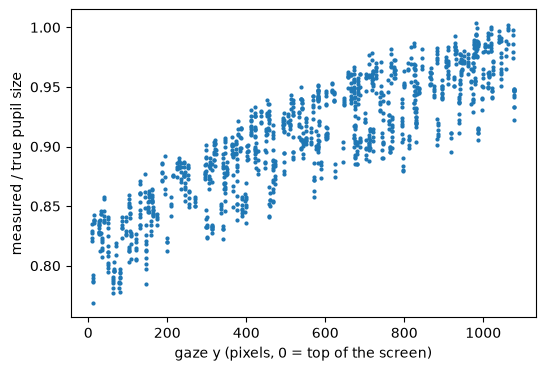
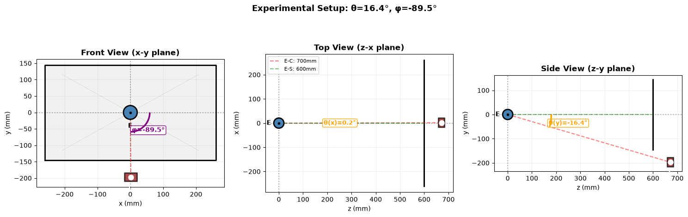
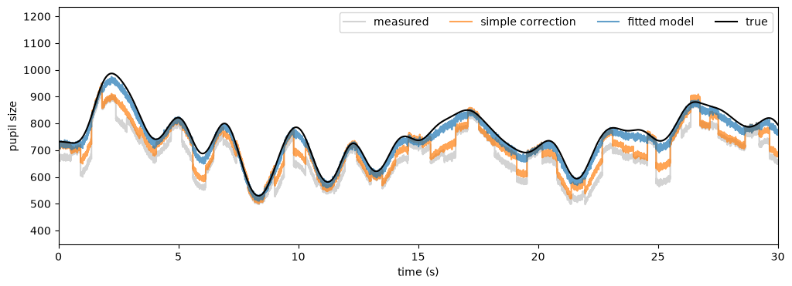

Correcting pupil foreshortening#
Experimental: The method works on simulated data, but it has not been validated on real recordings yet, and the API will change. A fitted model cannot yet be applied to the data with a single method call; the correction is applied by hand below.
Video-based eye trackers measure the pupil as it appears to the camera. When the eye looks away from the camera, the pupil is seen at an angle and appears smaller, even though its true size does not change. This pupil foreshortening error can be large compared to the effects of interest, and it is a problem whenever gaze position differs between conditions.
If \(\alpha\) is the angle between the direction from the eye to the camera and the direction of gaze, the measured pupil size \(A\) is related to the true size \(A_0\) by
where \(x, y\) is the gaze position on the screen. \(\alpha\) depends on the geometry of the setup: the distance between eye and screen, and the position of the camera. The details of the model and the fitting procedure are described in the algorithm description.
[2]:
import pypillometry as pp
from pypillometry import u
import numpy as np
import matplotlib.pyplot as plt
pp.logging_set_level("WARNING")
The experimental setup#
The geometry is described by an ExperimentalSetup: screen resolution and physical size, the distance from the eye to the screen, and the position of the camera relative to the eye, in spherical coordinates (\(\theta\): angle from the line of sight to the screen center, \(\phi\): direction around it, \(r\): distance). Here, the camera sits below the screen (\(\phi = -90°\)), 20° below the line of sight:
[3]:
setup = pp.ExperimentalSetup(
screen_resolution=(1920, 1080),
physical_screen_size=("52 cm", "29 cm"),
eye_to_screen_center="60 cm",
camera_spherical=("20 deg", "-90 deg", "70 cm"),
)
setup
[3]:
ExperimentalSetup(
screen=1920x1080px
physical=520x290mm
d=600mm
camera: r=700mm, θ=20.0°, φ=-90.0°
)
For your own data, set these values with d.set_experimental_setup(). Eye-to-screen distance and screen size are easy to measure; the camera angles are harder, which is why the method below estimates them from the data.
Simulated data#
generate_foreshortening_data() simulates two minutes of recording: a slowly changing true pupil size \(A_0\), fixations at random places on the screen, the resulting foreshortening and some measurement noise. The true values are kept in sim_data:
[4]:
fd = pp.generate_foreshortening_data(experimental_setup=setup, duration=120,
fs=500, seed=42)
true_pupil = np.asarray(fd.sim_data["left_A0"])
fd
[4]:
FakeEyeData — supuleku
Signal overview
![left_pupil sparkline]()
![left_x sparkline]()
![left_y sparkline]()
Data glimpse
EyeDataDict(vars=3,n=60000,shape=(60000,)): left_x (float64): 179.3079109382324, 179.3079109382324, 179.3079109382324, 179.3079109382324, 179.3079109382324... left_y (float64): 830.902834943248, 830.902834943248, 830.902834943248, 830.902834943248, 830.902834943248... left_pupil (float64): 671.0408184163064, 681.3718232549013, 681.0167318094741, 666.7572984335031, 667.4368546882736...
The measured pupil size depends on where the eye looks. Points far away from the camera (at the top of the screen) give the smallest values:
[5]:
measured = np.asarray(fd["left_pupil"])
y_px = np.asarray(fd["left_y"])
plt.figure(figsize=(6, 4))
plt.scatter(y_px[::50], (measured / true_pupil)[::50], s=4)
plt.xlabel("gaze y (pixels, 0 = top of the screen)")
plt.ylabel("measured / true pupil size");

A simple correction#
correct_pupil_foreshortening() uses a simple geometric correction that only needs the eye-to-screen distance. It assumes that the pupil appears undistorted when the eye looks at the screen center, i.e. that the camera is right behind the screen center:
[6]:
simple = fd.correct_pupil_foreshortening(inplace=False)
simple_pupil = np.asarray(simple["left_pupil"])
Fitting the camera position#
fit_foreshortening() estimates the camera angles \(\theta\) and \(\phi\) together with the time course of the true pupil size, which is modeled as a smooth B-spline. The idea is that the same true pupil size seen from different angles has to produce the measured values. The data are low-pass filtered and downsampled before fitting.
[7]:
cal = fd.fit_foreshortening("left", verbose=False)
cal
[7]:
ForeshorteningCalibration(eye='left', theta=16.4°, phi=-89.5°, n_coeffs=124, R²=0.948, RMSE=21.995)
The estimated angles are close to the true values (\(\theta = 20°\), \(\phi = -90°\)):
[8]:
print(f"theta = {np.degrees(cal.theta):.1f} deg, phi = {np.degrees(cal.phi):.1f} deg")
theta = 16.4 deg, phi = -89.5 deg
[9]:
fd.plot.plot_experimental_setup(calibration=cal);

The fitted model gives a correction factor \(1/\cos\alpha\) for every gaze position. Multiplying the measured pupil size by it gives the corrected signal:
[10]:
factor = cal.get_correction_factor(fd["left_x"], fd["left_y"])
fitted_pupil = np.asarray(fd["left_pupil"] * factor)
Comparison#
Since the data are simulated, we can compare each version with the true pupil size:
[11]:
def rmse(x):
return np.sqrt(np.nanmean((x - true_pupil) ** 2))
for name, signal in [("measured", measured), ("simple correction", simple_pupil),
("fitted model", fitted_pupil)]:
print(f"{name:18s} RMSE = {rmse(signal):5.1f}")
measured RMSE = 79.7
simple correction RMSE = 55.9
fitted model RMSE = 17.8
[12]:
t = fd.tx / 1000
plt.figure(figsize=(12, 4))
plt.plot(t, measured, color="lightgrey", label="measured")
plt.plot(t, simple_pupil, color="tab:orange", alpha=0.7, label="simple correction")
plt.plot(t, fitted_pupil, color="tab:blue", alpha=0.7, label="fitted model")
plt.plot(t, true_pupil, color="black", label="true")
plt.xlim(0, 30)
plt.xlabel("time (s)")
plt.ylabel("pupil size")
plt.legend(ncol=4);

The simple correction helps only partly, because the camera is not behind the screen center. The fitted model removes most of the error.
Open issues#
The fitted correction is not yet available as a method of the data objects (it has to be applied by hand as above).
Only one eye is fitted at a time, and screen offset and tilt in the experimental setup are not taken into account.
The method still needs to be validated on real data, e.g., with a calibration task in which participants fixate points across the screen.